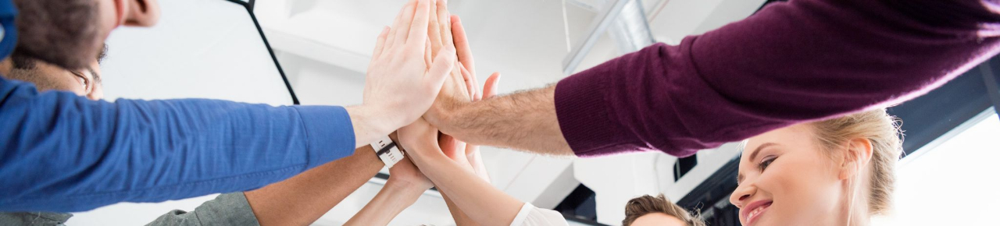

Estrategia de Profesionalización a Docentes y Entrenadores para fortalecer la educación física y el deporte escolar en México.
El programa de Capacitación de Kiin Uts está diseñado para elevar el nivel técnico, pedagógico y metodológico de los docentes de educación física y entrenadores deportivos que trabajan en instituciones educativas.
Creemos que un docente bien capacitado es la base de un programa deportivo exitoso. Por eso invertimos en su formación continua con contenidos actualizados, respaldados por la ciencia y adaptados al contexto educativo mexicano.

Tres modalidades de implementación para adaptarse a las necesidades y tiempos de cada institución.
Sesiones en las instalaciones del colegio o en nuestras sedes. Permiten práctica directa, demostraciones y retroalimentación inmediata.
Capacitación vía plataforma digital, con sesiones sincrónicas y asincrónicas. Ideal para equipos distribuidos geográficamente.
Combina sesiones presenciales con módulos en línea. El mejor balance entre flexibilidad y contacto directo.
Charlas magistrales con expertos en educación física, deporte escolar y ciencias del deporte. Ideales para jornadas de actualización.
Programas estructurados de formación de 8 a 40 horas con objetivos de aprendizaje claros, evaluaciones y certificación.
Sesiones prácticas e intensivas centradas en habilidades específicas. Alta interacción y aplicación directa al campo deportivo.
Inversión en las personas que forman a las personas.
Formamos docentes capaces de guiar el desarrollo físico, emocional y social de sus alumnos a través del deporte.
Todo el contenido está respaldado por evidencia científica en ciencias del deporte, pedagogía y psicología del desarrollo.
Metodologías de enseñanza adaptadas a diferentes edades y niveles, alineadas con los planes educativos vigentes.
Docentes más preparados impactan directamente en la calidad de los programas deportivos y el bienestar de los alumnos.
Manejo de emociones, motivación, concentración y trabajo mental en atletas escolares.
Fundamentos de alimentación saludable para jóvenes deportistas y su impacto en el rendimiento.
Protocolos de calentamiento, enfriamiento, primeros auxilios y manejo de lesiones deportivas comunes.
Diseño de temporadas, microciclos y sesiones de entrenamiento en el contexto educativo.
Aprendizaje basado en el juego. Técnicas para hacer más atractivas las clases de educación física.
Adaptaciones para incluir a alumnos con diferentes capacidades físicas en los programas deportivos.
Diseñamos programas de capacitación a la medida. Contáctanos y te preparamos una propuesta sin costo.